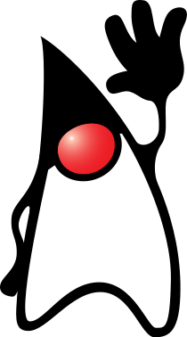
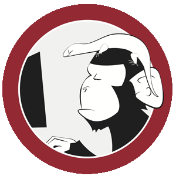
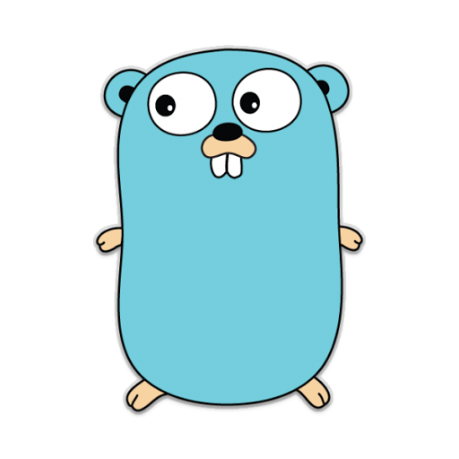

<!-- TODO stylize ;) -->
Who am i?
<!-- TODO think about it and write -->
Some of my personal sttuffs
- [Article] #noArchitecture
- [Article] De que hablo cuando hablo de #noArchitecture
- [Article] Lenguaje materno
- [Project] Acceptance cucumber docker container sample
- [Project] Project about how to compile with go. Some tips and tricks
- [Project] SSL/TLS mutual authentication example in Go, and layer 4 (tcp) load balancing
- [Project] Docker nano container sample
- [Project] A simple sample project to test containers with container composition.
My skills
Find me on at
My stickers
- 

- 


- 